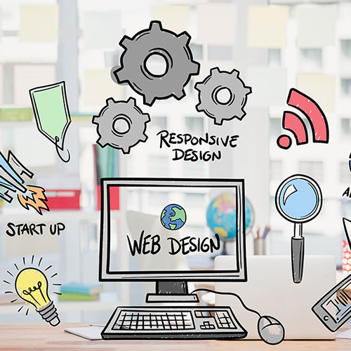

The Power of Creativity in Development
October 5, 2024 by Britanya Lynch
Creativity comes from within, allowing individuals to express their deepest thoughts and unique perspectives. It is an innate ability that, when nurtured, can lead to groundbreaking innovations and transformative experiences. In Web Development and Design, creativity is essential for developers to craft not just functional but visually appealing and user-centered designs. This process involves experimenting with layouts, color schemes, typography, and interactive elements to create interfaces that are both intuitive and engaging. A strong vision helps break away from conventional molds, making digital projects stand out and resonate with users on a deeper level. By pushing boundaries and challenging norms, developers can transform abstract concepts into immersive and impactful digital experiences. Embracing creativity also enhances both coding and problem-solving skills, fostering innovation. Developers who approach projects with a creative mindset are more adaptable, finding novel ways to optimize code and enhance performance. Creativity encourages them to think outside the box, explore alternative frameworks, and implement dynamic features that elevate the overall user experience. By exploring new ideas and continuously testing different approaches, developers sharpen their technical abilities and gain insight into the architectural frameworks of web and software design.